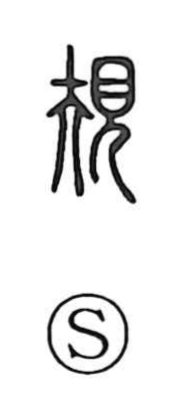

規

Uncategorized
Kun: | On: ki
rule ・ regulation ・ compass
Explanation
This character combines 夫 and 見, but here 夫 does not mean “husband.” In early forms it pictured a bunmawashi, a compass used to scribe circles, so 規 originally named the compass itself. Paired with 矩, the carpenter’s square for straight lines and right angles, the two tools form 規矩, the instruments that set the rule, hence the senses of rule and regulation. The graph 肅 (粛) similarly shows a brush with the compass, evoking an outline drawn by compass and then completed with brushwork. From the practice of laying out a circle with a compass came extended senses such as judging, measuring, and planning. Later, 定規 came to denote the straightedge or square, while 規 was first the implement for circles.